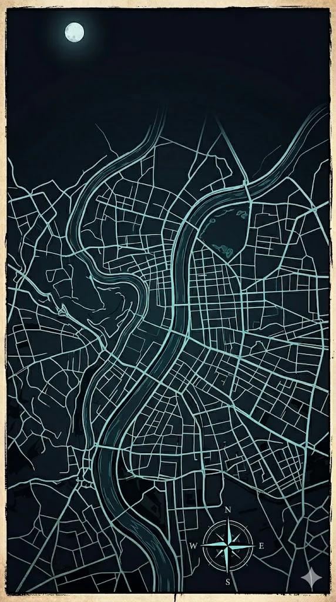

Ken Aiguise
Affûteur itinérant · Lyon 4
Meule à eau

tourner la page ›
Neuf regards sur le tranchant ✨
Passage sur site pour les pros 🚴 — collecte & retour inclus (Lyon 1er, 2e, 3e & 4e)
Feuilletez le livre pour découvrir mon parcours, ma méthode et ma vision du métier.
Affûteur itinérant · Lyon 4
Meule à eau

tourner la page ›
chapitre i
Cuisinier de formation (BEP/Bac Pro), j'ai consacré mes 15 ans de carrière à exercer mon métier dans le privé ainsi qu'en collectivité au sein du Département du Rhône. Aujourd'hui, à 32 ans, je connais parfaitement le quotidien des cuisines et la pénibilité liée à un matériel mal entretenu ; mon ambition est désormais d'aider mes confrères à retrouver le plaisir de couper en leur garantissant des couteaux au tranchant bien affuté.
chapitre ii
« Qu’il s’agisse de trancher, de tailler, de couper ou de sculpter, le point commun entre un cuisinier, un boucher, un poissonnier, un coiffeur, une couturière ou un jardinier reste le même : la dépendance absolue envers son outil. »
En déplaçant la meule à eau par vélo cargo au cœur de Lyon, j'offre à chaque métier une prestation sur mesure, adaptée à la dureté de leurs aciers et à la spécificité de leur usage.
chapitre iii
Ken Gassy · Ken Aiguise
06 35 21 87 84
Horaires — lundi à dimanche, 8h – 19h.
Professionnels — passages sur site (Lyon & métropole). Planning des tournées en cours d'organisation.
Particuliers — accueil le mercredi, Croix-Rousse (adresse partenaire à confirmer).
Détail du planning pro et des créneaux particuliers : à compléter prochainement.
Particuliers & Professionnels
Pensée pour les professionnels en tournée : réservez un créneau, suivez mon vélo cargo et gérez vos passages depuis votre téléphone.
Suivez mon vélo cargo en temps réel sur une carte interactive — sachez exactement où j'en suis dans ma tournée.
Choisissez votre créneau parmi les disponibilités du jour, directement depuis l'application.
Connexion via Google. Chaque accès est validé personnellement par Ken pour garantir la qualité du service.
Demandez votre accès via le formulaire de contact ci-dessous.
Demander l'accèsDisponible du lundi au dimanche, 8h–19h 🕗 — privilégiez le formulaire ou appelez-moi directement.
Je viens à vous en vélo cargo 🚴 : restaurants, cuisines collectives, commerces. Indiquez votre adresse et le volume d'outils — je vous propose un créneau de passage.
Accueil prévu tous les mercredis dans un bistro de la Croix-Rousse (adresse partenaire à confirmer). Atelier 74 rue d'Ypres : ouverture septembre 2026.